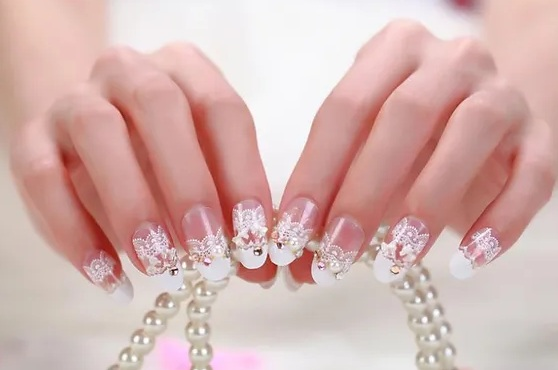
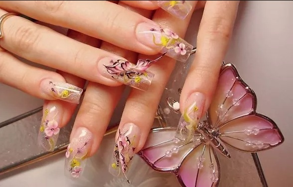
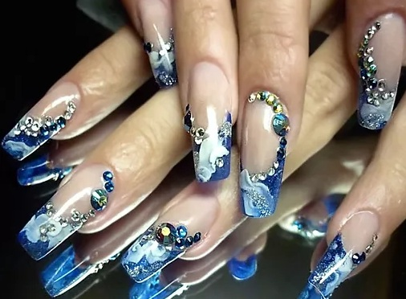
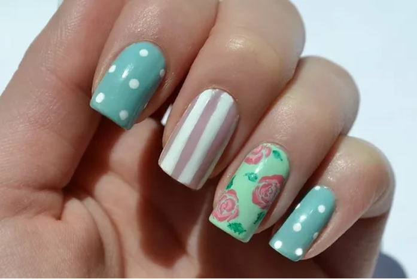
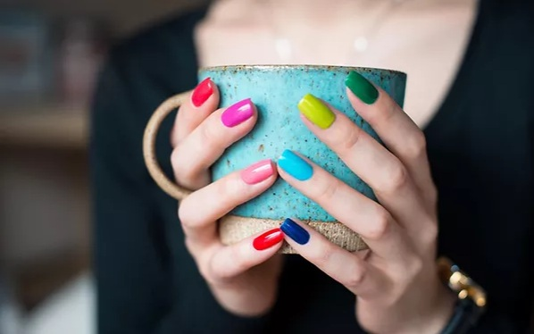
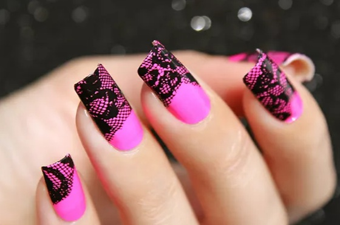

Aca podrás encontrar los diferentes trabajos que realizamos y sus beneficios.
Acrilico
Cuando trabajamos con acrilico debes tener en cuenta que es un proceso semipermanete, mediante el cual un gel
acrílico se aplica sobre la uña, el mismo lleva añadido esmalte y se consigue su endurecimiento gracias a los
rayos ultravioletas aplicados a travez de una lámpara LED.
La gran ventaja de este tipo de esmaltado es que el secado es completo, su brillo es impecable y su duración
es de 2 a 3 semanas, en función del crecimiento de la uña natural, ademas evita que te comas las uñas si sos
ancios@.



Esmaltado
El esmaltado es una gran solución para dejar de dañar tus uñas y qué crezcan sanas y fuertes. Se les dá la
forma y extensión que vos prefieras. Tus manos se verán perfectas y naturales instantáneamente.
Son extensiones que se construyen a partir de la uña natural, estas permiten restaurar y reconstruir uñas
mordidas o simplemente lucirlas más largas, algo que las hace sumamente atractivas, ya que se puede moldear la
forma y longitud para obtener varios estilos.
El esmaltado cumple una funcion similar al acrilico: alargar las uñas cortas, fortalecer las uñas débiles, y
mejorar notablemente la estética de la mano.


